소방설비기사(기계분야) (2008-09-07 기출문제)
1과목: 소방원론
1. “자연발화성 물질 및 금수성 물질”은 제 몇 류 위험물에 해당하는가?
- 제1류 위험물
- 제2류 위험물
- 제3류 위험물
- 제4류 위험물
(정답률: 64%)

2. 연소가스 중 많은 양을 차지하고 있으며 가스 그 자체의 독성은 없으나 다량이 존재할 경우, 사람의 호흡속도를 증가시키고 이로 인하여 화재가스에 혼합된 유해가스의 흡입을 증가시켜 위험을 가중시키는 가스는?
- CO
- CO2
- SO2
- NH3
(정답률: 46%)
3. 다음 중 분진폭발을 일으킬 가능성이 가장 낮은 것은?
- 마그네슘 분말
- 알류미늄 분말
- 종이 분말
- 석회석 분말
(정답률: 60%)
4. 다음 중 인화점이 가장 낮은 것은?
- 경유
- 메틸알코올
- 이황화탄소
- 등유
(정답률: 60%)
5. 연면적이 1000m2 이상인 건축물에 설치하는 방화벽에 갖추어야 할 기준으로 틀린 것은?
- 내화구조로서 자립할 수 있는 구조일 것
- 방화벽의 양쪽 윗쪽 끝을 건축물의 외벽면 및 지붕면으로부터 0.1m 이상 튀어 나오게 할 것
- 방화벽에 설치하는 출입문의 너비는 2.5m 이하로 할 것
- 방화벽에 설치하는 출입문의 높이는 2.5m 이하로 할 것
(정답률: 69%)
6. 다음 위험물 중 특수인화물이 아닌 것은?
- 아세톤
- 디에틸에테르
- 산화프로필렌
- 아세트알데히드
(정답률: 64%)
7. 다음 중 물리적 방법에 의한 소화라고 볼 수 없는 것은?
- 부촉매의 연쇄반응 억제작용에 의한 방법
- 냉각에 의한 방법
- 공기와의 접촉 차단에 의한 방법
- 가연물 제거에 의한 방법
(정답률: 71%)
8. 다음 중 화재발생 가능성이 가장 낮은 경우는?
- 주위 온도가 높을 때
- 인화점이 낮을 때
- 활성화에너지가 클 때
- 폭발 하한계가 낮을 때
(정답률: 57%)
9. 질식소화시 공기 중의 산소농도는 일반적으로 몇 vol%이하로 하여야 하는가?
- 25
- 21
- 19
- 15
(정답률: 66%)
10. 드럼통 속의 이황화탄소가 타고 있는 경우 물로 소화가 가능하다. 이 때 주된 소화효과에 해당하는 것은?
- 제거소화
- 질식소화
- 촉매소화
- 부촉매소화
(정답률: 50%)
11. 지하층이라 함은 건축물의 바닥이 지표면 아래에 있는 층으로서 바닥에서 지표면까지의 평균높이가 해당 층 높이의 얼마 이상인 것을 말하는가?
- 1/2
- 1/3
- 1/4
- 1/5
(정답률: 63%)
12. 건축물에서 주요 구조부가 아닌 것은?
- 차양
- 주계단
- 내력벽
- 기둥
(정답률: 77%)
13. 자연발화의 방지방법이 아닌 것은?
- 통풍이 잘 되도록 한다.
- 퇴적 및 수납시 열이 쌓이지 않게 한다.
- 높은 습도를 유지한다.
- 저장실의 온도를 낮게 한다.
(정답률: 71%)
14. 다음 가스에서 공기 중 연소범위가 가장 넓은 것은?
- 메탄
- 프로판
- 에탄
- 아세틸렌
(정답률: 75%)
15. 가연물의 제거와 관련이 없는 소화방법은?
- 촛불을 입김으로 불어서 끈다.
- 산불 화재시 나무를 잘라 없앤다.
- 팽창 진주암을 사용하여 진화한다.
- 가스화재시 중간밸브를 잠근다.
(정답률: 78%)
16. 피난계획의 일반원칙 중 fool proof 원칙이란 무엇인가?
- 저지능인 상태에서도 쉽게 식별이 가능하도록 그림이나 색채를 이용하는 원칙
- 피난설비를 반드시 이동식으로 하는 원칙
- 한 가지 피난기구가 고장이 나도 다른 수단을 이용할 수 있도록 고려하는 원칙
- 피난설비를 첨단화된 전자식으로 하는 원칙
(정답률: 63%)
17. 물체의 표면온도가 250℃에서 650℃로 상승하면 열복사량은 약 몇 배 정도 상승하는가?
- 2.5
- 5.7
- 7.5
- 9.7
(정답률: 58%)
18. 유류 저장탱크에 화재 발생시 열류층에 의해 탱크 하부에 고인 물 또는 에멀젼이 비점 이상으로 가열되어 부피가 팽창되면서 유류를 탱크 외부로 분출시켜 화재를 확대 시키는 현상은?
- 보일오버
- 롤오버
- 백드래프트
- 플래시오버
(정답률: 71%)
19. 다음 중 비열이 가장 큰 것은
- 물
- 금
- 수은
- 철
(정답률: 69%)
20. 황이나 나프탈렌 같은 고체위험물의 주된 연소 형태는?
- 표면연소
- 증발연소
- 자기연소
- 분해연소
(정답률: 50%)
2과목: 소방유체역학
21. 액체가 0.02m3의 체적을 갖는 강체의 실린더 속에서 730kPa의 압력을 받고 있다. 압력이 1030kPa로 증가되었을 때 액체의 체적이 0.019m3으로 축소되었다. 이때 이 액체의 체적탄성계수는 약 몇 kPa 인가?
- 3000
- 4000
- 5000
- 6000
(정답률: 40%)
22. 분말 소화약제의 열분해 반응식 중 틀린 것은?
- 2KHCO3→K2CO3+CO2+H2O
- 2NaHCO3→2NaCO3+2CO2+H2O
- NH4H2PO4→H3PO4+NH3
- 2KHCO3+(NH2)2CO→K2CO3+2NH3+2CO2
(정답률: 53%)
23. 소화약제로 사용되는 할로겐 원소에 해당하는 것은?
- H
- C
- Na
- Br
(정답률: 69%)
24. 보통의 파이프 내 난류 유동의 유량을 오리피스 유량계, 노즐 유량계, 벤투리 유량계로 측정할 때 송출계수(유량계수)가 가장 작은 것은?
- 오리피스 유량계
- 노즐 유량계
- 벤투리 유량계
- 모두 동일하다
(정답률: 39%)
25. 유체에서의 압력을 P, 체적 유량을 Q라고 했을 때, 압력×체적 유량(P×Q)과 같은 차원을 갖는 물리량은?
- 부력(buoyancy force)
- 일(work)
- 동력(power)
- 표면장력(surface tension)
(정답률: 59%)
26. 비중이 2인 유체가 정상 유동하고 있다. 동압이 400 kPa이 라면 이 유체의 유속은 몇 m/s인가?
- 10
- 14.1
- 20
- 28.3
(정답률: 30%)
27. 수은의 비중이 13.55일 때 비체적은 몇 m3/kg인가?
- 13.55
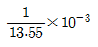
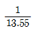
- 13.55×10-3
(정답률: 55%)
28. 매우 긴 직선 원형 관 속에 마찰계수가 일정하다고 가정되는 완전 난류로 흘러가고 있을 때 마찰 손실에 대하여 올바르게 설명한 것을 모두 고른 것은?
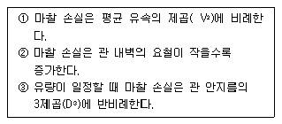
- ①
- ①, ③
- ②, ③
- ①, ②, ③
(정답률: 48%)
29. 단백포 소화약제의 특징이 아닌 것은?
- 내열설이 우수하다.
- 유류에 대한 유동성이 나쁘다.
- 변질의 우려가 없어 저장 유효기간의 제한이 없다.
- 가스계 소화약제에 비래 소화 속도가 늦다.
(정답률: 55%)
30. 수압기에서 피스톤의 반지름이 각각 20cm와 10cm이다. 작은 피스톤에 19.6N의 힘을 가하면 큰 피스톤에는 몇 N의 하중을 올릴 수 있는가?
- 4.9
- 9.8
- 68.4
- 78.4
(정답률: 31%)
31. 파이프내를 흐르는 유체의 유량을 측정하는 장치가 아닌 것은?
- 벤투리 미터
- 사각 위어
- 오리피스 미터
- 로타 미터
(정답률: 62%)
32. 온도가 T인 유체가 정압이 P인 상태로 흐를 때 공동현상이 발생하는 조건으로 가장 적정한 것은? (단, 유체 온도 T에 해당하는 포화증기압을 Ps라 한다.)
- P > Ps
- P > 2×Ps
- P < Ps
- P < 2×Ps
(정답률: 53%)
33. 그림과 같이 물탱크에서 2m2의 단면적을 가진 파이프를 통해 터빈으로 물이 공급되고 있다. 송출되는 터빈은 탱크내의 물 높이보다 30m 아래에 위치하고, 유량은 10m3/s이고 터빈 효율이 80% 일 때 터빈 출력은 약 몇 kW인가? (단, 관 전체의 손실계수 K는 2로 가정한다.)
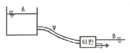
- 220
- 2690
- 2152
- 3363
(정답률: 35%)
34. 비중이 0.95인 액체가 흐르는 곳에 그림과 같이 피토 튜브를 직각으로 설치하였을 때 h=150mm, H=30mm로 나타났다면 점 1위치에서의 유속 V는 약 몇 m/s 인가?
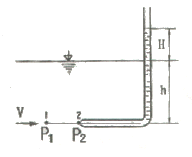
- 0.8
- 1.6
- 3.2
- 4.2
(정답률: 40%)
35. 전도는 서로 접촉하고 있는 물체의 온도차에 의하여 발생하는 열전달 현상이다. 다음 중 단위 면적당의 열전달률(W/m2)을 설명한 것 중 옳은 것은?
- 전열면에 직각인 방향의 온도 기울기에 비례한다.
- 전열면에 평행한 방향의 온도 기울기에 비례한다.
- 전열면에 직각인 방향의 온도 기울기에 반비례한다.
- 전열면에 평행한 방향의 온도 기울기에 반비례한다.
(정답률: 24%)
36. 그림과 같이 속도 V인 유체가 정지하고 있는 곡면 깃에 부딪혀 ⍬의 각도로 유동 방향이 바뀐다. 유체가 곡면에 가하는 힘의 x, y성분의 크기를
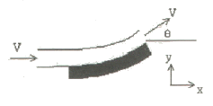
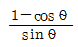
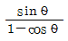
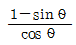
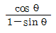
(정답률: 56%)
37. 할로겐화합물 소화설비에 사용하는 소화약제가 아닌 것은?
- 할론 2402
- 할론 1211
- 할론 1301
- 할론 1311
(정답률: 68%)
38. 표준대기압 상태인 어떤 지방의 호수 속에 있던 공기의 기포가 수면으로 올라 오면서 지름이 2배로 팽창하였다. 이 때 기포의 최초 위치는 수면으로부터 약 몇 m 인가? (단, 기포 내의 공기는 Boyle의 법칙에 따른다.)
- 36
- 72
- 108
- 144
(정답률: 37%)
39. 이상기체의 정압비열 Cp와 정적비열 Cv의 관계식으로 옳은 것은? (단, R은 기체상수이다.)
- Cv - Cp = R
- Cp - Cv = R
- Cp = Cv
- Cp < Cv
(정답률: 50%)
40. 다음 중 연속방정식을 가장 적절하게 설명한 것은?
- 뉴턴의 제2운동 법칙이 유체 중의 모든 점에서 만족하는 것이다.
- 에너지와 일 사이의 관계를 나타낸 것이다.
- 한 유선 위의 두 점에 대한 단위 체적당의 운동량 관계를 나타낸 것이다.
- 질량보존의 법칙을 유체 유동에 적용한 것이다.
(정답률: 46%)
3과목: 소방관계법규
41. 제4류 위험물을 저장하는 위험물제조소의 주의사항을 표시한 게시판의 내용으로 적합한 것은?
- 물기주의
- 물기엄금
- 화기주의
- 화기엄금
(정답률: 60%)
42. 보일러 등의 위치ㆍ구조 및 관리와 화재예방을 위하여 불의 사용에 있어서 지켜야 하는 사항과 관련하여 보일러의 사용에 관한 설명 중 바르지 모한 것은?
- 보일러와 벽ㆍ천장 사이는 0.5m 이상 되도록 할 것
- 보일러를 실내에 설치할 경우에는 콘크리트바닥 또는 금속 외의 불연재료로 된 바닥 위에 설치할 것
- 기체연료를 사용하는 경우 화재 등 긴급시 연료를 차단할 수 있는 개폐밸브를 연료용기 등으로부터 0.5m 이내에 설치할 것.
- 경유ㆍ등유 등 액체연료를 사용하는 경우 연료탱크는 보일러 본체로부터 수평거리 1m 이상의 간격을 두어 설치할 것
(정답률: 38%)
43. 지하층을 포함한 층수가 16층 이상 40층 미만인 특정소방대상물의 소방시설공사현장에 배치하여야 할 소방공사 감리원의 배치기준으로 알맞은 것은?
- 초급감리원 이상의 소방감리원 1인 이상
- 특급감리원 이상의 소방감리원 1인 이상
- 고급감리원 이상의 소방감리원 1인 이상
- 중급감리원 이상의 소방감리원 1인 이상
(정답률: 45%)
44. 다음 시설 중 하자 보수의 보증기간이 다른 것은?
- 피난기구
- 자동식소화기
- 상수도소화용수설비
- 자동화재탐지설비
(정답률: 38%)
45. 점포에서 위험물을 용기에 담아 판매하기 위하여 지정수량의 40배 이하의 위험물을 취급하는 장소는?
- 일반취급소
- 주유취급소
- 판매취급소
- 이송취급소
(정답률: 43%)
46. 소방기본법에서 사용하는 용어의 정의 중 소방대상물에 해당 되지 않는 것은?
- 산림
- 항해중인 선박
- 선박건조구조물
- 차량
(정답률: 65%)
47. 다음 특정소방대상물 중 노유자(老幼者)시설에 속하지 않는 것은?
- 보건소
- 경로당
- 아동복지시설
- 장애인재활시설
(정답률: 53%)
48. 소방서장 또는 소방본부장은 원활한 소방활동을 위하여 월1회 이상 소방용수시설에 대한 조사를 하는데 그 조사 결과를 몇 년간 보관하여야 하는가?
- 1년
- 2년
- 3년
- 4년
(정답률: 58%)
49. 다음 중 인명구조기구를 설치하여야 할 특정소방대상물에 속하는 것은?
- 지하층을 포함하는 층수가 16층 이상인 아파트 및 7층 이상인 백화점
- 지하층을 포함하는 층수가 7층 이상인 관광호텔 및 5층 이상인 병원
- 지하층을 포함하는 층수가 5층 이상인 무도학원 및 7층 이상인 영화관
- 지하층을 포함하는 층수가 5층 이상인 오피스텔 및 관광휴게시설
(정답률: 37%)
50. 소방대상물의 소방검사에 관한 설명 중 옳지 않은 것은?
- 관계인에게 필요한 보고 또는 자료의 제출을 명할 수 있다.
- 관계 공무원으로 하여금 관계지역에 출입하여 소방대상물의 위치, 구조, 설비 또는 관리의 상황을 검사하게 할 수 있다.
- 개인의 주거에 있어서는 어떠한 경우에도 검사하여서는 아니되며, 개인 주거의 관리자에게 정기적인 검사를 하도록 통보만 하여야 한다.
- 소방검사를 하고자 하는 때에는 일반적인 경우 24시간 전에 관계인에게 이를 알려야 한다.
(정답률: 49%)
51. 다음 중 위험물 제조소의 위치ㆍ구조 및 설비의 기준으로 알맞은 것은?
- 안전거리는 지정문화재에 있어서는 50m 이상 두어야 한다.
- 보유공지의 너비는 취급하는 위험물의 최대수량이 지정수량의 10배 이하일 때는 5m 이상 보유해야 한다.
- 옥외설비의 바닥의 둘레는 높이 0.1m 이상의 턱을 설치하여 위험물이 외부로 흘러나가지 아니하도록 한다.
- 배출설비의 1시간당 배출능력은 전역방식의 경우에는 바닥면적 1m2당 16m3이상으로 할 수 있다.
(정답률: 46%)
52. 소방시설공사에 관한 방주자의 권한을 대행하여 소방시설공사가 설계도서 및 관계법령에 따라 적법하게 시공되는지 여부의 확인과 품징ㆍ시공관리에 대한 기술지도를 수행하는 영업은?
- 소방시설공사업
- 소방시성관리업
- 소방공사감리업
- 소방시설설계업
(정답률: 52%)
53. 다음 중 1급 방화관리대상물에 두어야 할 방화관리자로 선임될 수 없는 자는?
- 위험물기능사 자격을 가진 자로서 관련 규정에 따라 위험물안전관리자로 선임된 자
- 소방설비기사 또는 소방설비산업기사 자격을 가진 자
- 소방공무원으로 3년 이상 근무한 경력이 있는 자
- 소방안전관리학과를 전공하고 졸업한자로 3년 이상 방화관리에 관한 실무경력이 있는 자
(정답률: 37%)
54. 다음 소방시설 중 소화설비에 속하지 않는 것은?
- 옥내소화전설비
- 스프링클러설비
- 소화약제에 의한 간이소화용구
- 연결살수설비
(정답률: 55%)
55. 다음 중 의용소방대 설치에 관한 사항으로 알맞은 것은?
- 소방본부장 또는 소방서장은 특별시ㆍ광역시ㆍ시ㆍ읍ㆍ면에 의용소방대를 둔다.
- 의용소방대의 설치ㆍ명칭ㆍ구역ㆍ조직등 필요한 사항은 행정안전부령으로 정한다.
- 의용소방대원이 소방업무 및 소방관련 교육ㆍ훈련을 수행한 때에는 행정안전부령에 따라 수당을 지급한다.
- 의용소방대원이 소방업무 및 소방관련 교육ㆍ훈련으로 인하여 질병에 걸리거나 부상을 입거나 사망한 때에는 소방방재청장의 고시에 따라 보상금을 지급한다.
(정답률: 42%)
56. 다음 중 소방신호의 종류에 속하지 않는 것은?
- 훈련신호
- 발화신호
- 해제신호
- 경보신호
(정답률: 28%)
57. 다음 중 건축허가등의 동의대상물에 속하지 않는 것은?
- 연면적 400m2 이상인 건축물
- 청소년시설 및 노유자시설로서 연면적 150m2 이상인 건축물
- 차고ㆍ주차장으로 사용되는 층 중 바닥면적이 200m2이상인 층이 있는 시설
- 지하층이 있는 건축물로서 바닥면적이 150m2 이상인 층이 있는 것
(정답률: 40%)
58. 인화성액체위험물(이황화탄소는 제외)의 옥외저장탱크 주위에는 기준에 따라 방유제를 설치해야 하는데 다음 중 잘못 설명된 것은?
- 방유제의 높이는 1m 이상 4m 이하로 할 것
- 방유제내의 면적은 8만제곱미터 이하로 할 것
- 방유제의 용량은 방유제안에 설치된 탱크가 하나인 경우에는 그 탱크 용량의 110% 이상을 할 것
- 방유제의 용량은 방유제안에 설치된 탱크가 2기 이상인 경우 그 탱크 중 용량이 최대인 것의 용량의 110% 이상으로 할 것
(정답률: 40%)
59. 소방용수표지와 관련하여 다음 (㉠), (㉡)에 들어갈 내용으로 알맞은 것은?
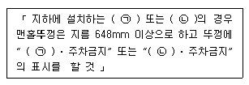
- ㉠ 급수탑, ㉡ 저수조
- ㉠ 소화전, ㉡ 소화기
- ㉠ 소화전, ㉡ 저수조
- ㉠ 급수탑, ㉡ 소화기
(정답률: 50%)
60. 소방공사감리업자가 감리원을 소방공사감리현장에 배치하는 경우 감리원 배치일부터 며칠 이내에 누구에게 통보하여야 하는가?
- 7일 이내, 소방본부장 또는 소방서장
- 14일 이내, 소방본부장 또는 소방서장
- 7일 이내, 시ㆍ도지사
- 14일 이내, 시ㆍ도지사
(정답률: 41%)
4과목: 소방기계시설의 구조 및 원리
61. 상수도 소화용수 설비의 채수용 소화전은 소방대상물의 수평투영면의 각 부분으로부터 몇 m 이하가 되도록 설치하는가?
- 25m
- 40m
- 100m
- 140m
(정답률: 67%)
62. 스프링클러 헤드 설치방법 중 상수가 방해되지 않게 하기 위해서는 헤드로부터 반경 몇 cm 이상의 공간을 보유해야 하는가?
- 30cm
- 40cm
- 50cm
- 60cm
(정답률: 63%)
63. 포소화설비에 사용되는 펌프의 양정(H)은 다음 식에 따라 산출한 수치 이상이 되도록 해야 한다. H=h1+h2+h3+h4 각 용소에 해당하는 설명으로 가장 거리가 먼 것은?
- h1은 방출수의 설계압력 환산수두 또는 노즐선단의 방사압력 환산수두
- h2는 배관의 마찰손실 수두
- h3은 펌프흡입구의 하단에서 최상부에 있는 포방출구까지의 수직거리 즉 낮차
- h4는 헤드의 마찰손실 수두
(정답률: 56%)
64. 간이스프링클러설비에 설치하는 간이형스프링클러헤드 하나의 방호면적은 몇 m2이하로 하는가?
- 13.4
- 14.3
- 14.5
- 15.4
(정답률: 42%)
65. 분말 소화설비에 사용되는 소화약제의 주성분이 아닌 것은?
- 중탄산 나트륨
- 제1인산 암모늄
- 중탄산 칼륨
- 중탄산 마그네슘
(정답률: 78%)
66. 소화용수 설비에 설치하는 소화수조의 소요수량이 50m3인 경우 가압송수장치의 1분단 송수량은 몇 m3/min 이상이어야 하는가?
- 1.1
- 2.2
- 3.3
- 5.5
(정답률: 30%)
67. 연소할 우려가 있는 부분에 드렌처 설비를 설치 하였다. 한개 회로에 드렌처 헤드 5개식 2개 회로를 설치하였을 경우에 드렌처 설비에 필요한 수원의 수량은 얼마 이상이어야 하는가?(오류 신고가 접수된 문제입니다. 반드시 정답과 해설을 확인하시기 바랍니다.)
- 2m3
- 4m3
- 8m3
- 16m3
(정답률: 42%)
68. 대형 수동식 소화기를 설치할 때에 소방 대상물의 각부분으로부터 1개의 대형 수동식 소화기까지의 보행거리가 몇 m 이내가 되도록 배치하여야 하는가?
- 20
- 25
- 30
- 40
(정답률: 65%)
69. 이산화탄소 소화기에서 소화기구의 설치장소별 적응대상에 해당하지 않는 것은?
- 가연성 액체류
- 가연성 고체류
- 알칼리 금속과 산화물
- 가연성 가스
(정답률: 65%)
70. 소방대상물의 설치장소가 지하층에 적응되는 피난기구는 어느 것인가?
- 피난사다리
- 미끄럼대
- 구조대
- 피난교
(정답률: 68%)
71. 옥내소화전 설비 중 펌프의 성능은 체절운전(Shut off)시 정격토출압력의 몇 % 를 초과하지 않아야 하는가?
- 65
- 75
- 100
- 140
(정답률: 54%)
72. 이산화탄소 소화설비의 기동장치에 대한 기준 중 틀린 것은?
- 수동식기동장치의 조작부는 바닥으로부터 높이 0.8m 이상 1.5m 이하에 설치한다.
- 자동식기동장치에는 수동으로도 기동할 수 있는 구조로 할 필요는 없다.
- 가스압력시 기동장치에서 기동용가스용기 및 당해 용기에 사용하는 밸브는 25MPa 이상의 압력에 견디어야 한다.
- 전기식기동장치로서 7병 이상의 저장용기를 동시에 개방하는 설비에는 2병 이상의 저장용기에 전자개방밸브를 설치한다.
(정답률: 75%)
73. 물분무 헤드의 설치 제외 대상이 아닌 것은?
- 운전시에 표면의 온도가 200℃ 이상으로 되는 등 직접분무시 손상우려가 있는 기계장치 장소
- 고온의 물질 및 증류 범위가 넓어 끓어 넘치는 위험이 있는 물질을 저장 또는 취급하는 장소
- 물에 심하게 반응하는 물질을 저장 또는 취급하는 장소
- 물과 반응하여 위험한 물질을 생성하는 물질을 저장 또는 취급하는 장소
(정답률: 70%)
74. 280m2의 발전실에 부속용도별로 추가하여야 할 적응성이 있는 수동식 소화기 수량은 몇 개 이상이어야 하는가?
- 2개
- 4개
- 6개
- 12개
(정답률: 61%)
75. 지하가의 바닥면적이 3500m2이다. 연결송수관설비의 방수구는 소방대상물 각 부분으로부터 수평거리 몇 m 이하가 되도록 설치하여야 하는가?
- 25m
- 30m
- 40m
- 50m
(정답률: 41%)
76. 할론 1301 소화약재의 소화효과와 가장 거리가 먼 것은?
- 냉각소화
- 질식소화
- 가연물 제거소화
- 연쇄반응의 억제소화
(정답률: 50%)
77. 스프링클러 설비의 배관에 대한 설명으로 옳지 않은 것은?
- 주차장의 스프링클러 설비는 습식 이외의 방식으로 한다.
- 습식 스프링클러 설비는 헤드를 향하여 상향으로 수평주행배관의 기울기를 1/500 이상으로 한다.
- 급수배관에 설치되는 탬퍼스위치는 감시제어반 또는 수신기에서 동작의 유무 확인을 할 수 있어야 한다.
- 일제개방밸브를 사용하는 스프링클러 설비에서는 일제 개방밸브 2차측에 개폐표시형 밸브를 설치하여야 한다.
(정답률: 54%)
78. 이산화탄소 소화설비의 자동식 기동장치 설비 기준으로 적합하지 않은 것은?(오류 신고가 접수된 문제입니다. 반드시 정답과 해설을 확인하시기 바랍니다.)
- 기동장치는 자동화재탐지설비의 감지기의 작동과 연동하여야 할 것
- 자동식 기동장치에는 수동으로도 기동할 수 있는 구조로 할 것
- 가스 압력시 기동용 가스 용기의 용적은 1ℓ 이상으로 할 것
- 기동용 가스용기에 저장하는 이산화탄소의 충전비는 1.3이상으로 할 것
(정답률: 49%)
79. 연결살수설비에 관한 설명 중 맞지 않는 것은?
- 송수구는 반드시 65mm 의 쌍구형으로만 하여야 한다.
- 선택밸브는 화재시 연소의 우려가 없는 장소에 설치한다.
- 헤드는 천정 또는 반자의 실내에 면하는 부분에 설치한다.
- 개방형 헤드 사용시 주배관 중 물이 잘 빠질 수 있는 위치에 자동배수 밸브를 설치한다.
(정답률: 67%)
80. 특별피난계단 부속실 등에 설치하는 급기가압방식 제연설비의 측정, 시험, 조정 항목을 열거한 것이다. 맞지 않는 것은?
- 출입문의 크기, 개폐방향이 설계도면과 일치하는지 여부 확인
- 출입문과 바닥 사이의 틈새가 균일한지 여부 확인
- 화재감지기 동작에 의한 설비 작동 여부 확인
- 피난구의 설치 위치 및 크기의 적정 여부 확인
(정답률: 34%)